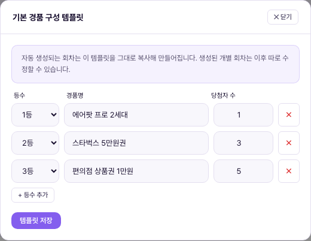
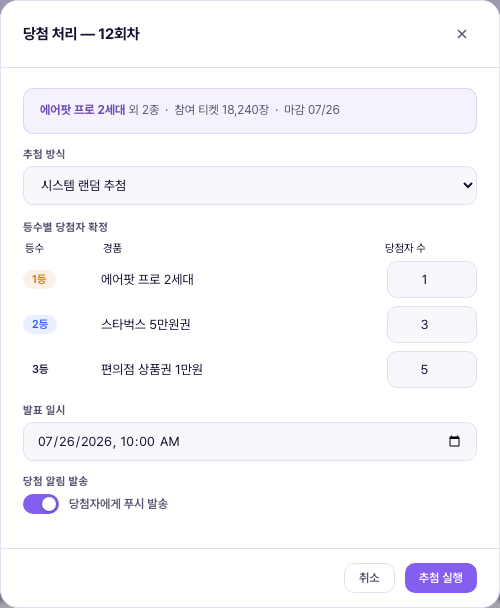

1. 한 줄 정의1. Định nghĩa một dòng
추첨 관리 = 이벤트 티켓을 소모해 참여하는 경품 추첨 "회차"를 등록하고, 마감 후 당첨자를 확정하는 화면. 회차는 매주 월요일 0시 시작 ~ 일요일 마감(마감 시각은 관리자가 조정 가능, 기본 21:00)으로 운영되며, 자동 회차 등록을 켜두면 마감된 회차 다음의 신규 회차가 기본 경품 구성 템플릿을 복사해 자동 생성된다. 수동으로 회차를 등록·수정하는 것도 항상 가능하다. 지금은 1단계 — 당첨자 확정(추첨 실행)은 관리자가 직접 버튼을 눌러 처리하며, 당첨자에게는 카톡·이메일로 배송지 입력을 안내하고 경품은 수동 발송한다.Quản lý bốc thăm = màn hình đăng ký các "đợt" bốc thăm quà tặng mà người dùng tham gia bằng cách tiêu vé sự kiện, và xác nhận người trúng thưởng sau khi đợt kết thúc. Đợt vận hành theo chu kỳ bắt đầu 0h Thứ Hai ~ đóng Chủ Nhật hàng tuần (giờ đóng do Vận hành viên điều chỉnh được, mặc định 21:00). Khi bật đăng ký đợt tự động, đợt mới tiếp theo sau đợt đã đóng sẽ được tạo tự động bằng cách sao chép mẫu cấu hình quà mặc định. Đăng ký·sửa đợt thủ công cũng luôn khả dụng. Hiện đang ở giai đoạn 1 — việc xác nhận người trúng (thực hiện bốc thăm) do Vận hành viên tự tay bấm nút, người trúng được hướng dẫn nhập địa chỉ nhận hàng qua Kakao·email và quà được gửi thủ công.
2. 중복 화면 정리 — "주간 이벤트 추첨 설정"과의 통합2. Dọn dẹp màn trùng lặp — Hợp nhất với "Cài đặt bốc thăm sự kiện hàng tuần"
3. 화면 구성3. Cấu trúc màn hình
추첨 회차 목록 + 자동 회차 등록 설정Danh sách đợt bốc thăm + Cài đặt đăng ký đợt tự động

상단 "자동 회차 등록" 카드에 체크박스와 "마감 시각(매주 일요일)" 시간 입력, "기본 경품 구성 템플릿 편집" 버튼이 있다. 체크박스를 켜면 관리자가 CMS에 접속할 때마다 마감이 지난 회차가 있는지 확인해, 있으면 템플릿을 복사한 다음 회차를 자동 생성한다(실서비스에서는 서버 크론이 같은 일을 매주 정해진 시각에 수행하며, 이 데모는 CMS 접속 시점에 검사·생성하는 방식으로 같은 결과를 보여준다). 아래 "추첨 회차 목록" 카드는 회차 / 경품 구성 / 추첨 기간 / 마감일 / 참여 티켓 / 당첨자 / 상태 / 액션 8열 표다. 자동 생성된 회차는 "자동 생성" 배지가 붙는다. 상태는 진행 중(파랑, 마감 전) / 마감·처리 대기(주황, 마감됐지만 당첨 미처리) / 완료(초록, 당첨 처리 끝) 3가지이며, 마감 임박(1일 이내) 회차는 마감일이 빨간 글씨로 강조된다.Ở thẻ "Đăng ký đợt tự động" phía trên có checkbox, ô nhập giờ "Giờ đóng (Chủ Nhật hàng tuần)", và nút "Sửa mẫu cấu hình quà mặc định". Khi bật checkbox, mỗi lần Vận hành viên đăng nhập CMS hệ thống sẽ kiểm tra xem có đợt nào đã quá hạn đóng hay chưa — nếu có, sẽ sao chép mẫu và tự động tạo đợt tiếp theo (ở dịch vụ thực tế, cron server sẽ làm việc này vào giờ cố định mỗi tuần; bản demo này kiểm tra·tạo ngay tại thời điểm đăng nhập CMS để cho ra cùng kết quả). Thẻ "Danh sách đợt bốc thăm" bên dưới là bảng 8 cột: Đợt / Cơ cấu quà / Thời gian bốc thăm / Hạn chót / Vé tham gia / Người trúng / Trạng thái / Hành động. Đợt được tạo tự động có badge "Tạo tự động". Trạng thái có 3 loại: Đang diễn ra (xanh dương, chưa đến hạn) / Đã đóng · chờ xử lý (cam, quá hạn nhưng chưa xử lý trúng thưởng) / Hoàn tất (xanh lá, đã xử lý xong). Đợt gần đến hạn (trong 1 ngày) hiển thị hạn chót bằng chữ đỏ nổi bật.
"새 추첨 회차 등록" / "회차 수정" 모달Modal "Đăng ký đợt bốc thăm mới" / "Sửa đợt"

| 요소Thành phần | 의미Ý nghĩa | 바꾸면 생기는 일Điều gì xảy ra khi thay đổi |
|---|---|---|
| 회차명Tên đợt | 텍스트 입력. "+ 회차 등록"으로 열면 다음 회차 번호가 자동으로 채워진다(예: "14회차 경품 추첨")Ô nhập văn bản. Khi mở bằng "+ Đăng ký đợt", số đợt tiếp theo được tự động điền sẵn (vd "Đợt bốc thăm quà lần 14") | 목록의 '회차' 컬럼과 앱 화면에 그대로 노출되는 이름Tên này hiển thị nguyên văn ở cột 'Đợt' trong danh sách và trên màn app |
| 시작일 / 마감일Ngày bắt đầu / Hạn chót | 날짜 선택기. 신규 등록 시 직전 회차 마감일 다음날부터 7일간(월~일)이 자동으로 채워진다Bộ chọn ngày. Khi đăng ký mới, 7 ngày (Thứ Hai~Chủ Nhật) tính từ ngày sau hạn chót của đợt trước được tự động điền sẵn | 마감일이 시작일보다 앞서면 등록이 차단되고 안내 문구가 뜬다. 마감일이 지나면 그 회차는 좌측 메뉴 (1) 배지에 포함되는 '관리자 처리 대기' 상태가 됨Nếu hạn chót sớm hơn ngày bắt đầu, việc đăng ký sẽ bị chặn và hiện thông báo. Sau khi qua hạn chót, đợt đó chuyển sang trạng thái 'chờ Vận hành viên xử lý' và được tính vào badge (1) ở menu bên trái |
| 등수별 경품 구성Cơ cấu quà theo hạng | 등수당 1행(중복 등수 금지), 한 등수에 경품 여러 개 등록 가능. 각 행 = 등수 드롭다운(1등/2등/…) + 경품명 텍스트 + 당첨자 수 숫자 + 삭제(×) 버튼. 신규 등록 시 "기본 경품 구성 템플릿"이 그대로 채워지며, 자유롭게 고쳐도 된다Mỗi hạng 1 dòng (cấm trùng hạng), một hạng có thể đăng ký nhiều quà. Mỗi dòng = dropdown hạng (Hạng 1/Hạng 2/…) + ô văn bản tên quà + số người trúng + nút xóa (×). Khi đăng ký mới, "Mẫu cấu hình quà mặc định" được điền sẵn nguyên văn, có thể sửa tự do | 등수를 중복 선택하면 등록이 차단되고 안내 문구가 뜬다. 경품명을 비워두거나 당첨자 수를 0 이하로 두어도 마찬가지로 차단된다Nếu chọn trùng hạng, việc đăng ký sẽ bị chặn và hiện thông báo. Để trống tên quà hoặc số người trúng ≤0 cũng bị chặn tương tự |
| "회차 등록Đăng ký đợt" / "저장Lưu" | 모달 하단 제출 버튼. 목록의 "수정" 버튼으로 열면 같은 모달이 "회차 수정" 제목·기존 값으로 채워진 채 열리고, 버튼도 "저장"으로 바뀐다Nút submit ở cuối modal. Khi mở bằng nút "Sửa" trong danh sách, cùng một modal mở ra với tiêu đề "Sửa đợt" và các giá trị hiện có được điền sẵn, nút cũng đổi thành "Lưu" | 신규 등록은 목록에 새 행이 생기고, 수정은 해당 행이 입력한 값으로 갱신된다. 자동 생성된 회차도 이 "수정"으로 개별 조정할 수 있다Đăng ký mới sẽ tạo dòng mới trong danh sách, còn sửa sẽ cập nhật dòng đó theo giá trị đã nhập. Đợt được tạo tự động cũng có thể điều chỉnh riêng bằng "Sửa" này |
"기본 경품 구성 템플릿" 모달Modal "Mẫu cấu hình quà mặc định"

"기본 경품 구성 템플릿 편집" 버튼으로 연다. 등수별 경품 구성을 회차 등록 모달과 똑같은 방식(등수·경품명·당첨자 수, + 등수 추가)으로 입력하고 "템플릿 저장"을 누르면, 이후 자동 생성되는 모든 회차가 이 구성을 그대로 복사해서 만들어진다. 이미 만들어진 회차에는 소급 적용되지 않는다 — 각 회차는 생성 시점의 템플릿 스냅샷을 갖고, 이후 템플릿을 바꿔도 이미 생성된 회차는 그대로 유지되며 필요하면 "수정"으로 개별 변경한다.Mở bằng nút "Sửa mẫu cấu hình quà mặc định". Nhập cơ cấu quà theo hạng theo đúng cách như modal đăng ký đợt (hạng·tên quà·số người trúng, + Thêm hạng), sau đó bấm "Lưu mẫu" thì mọi đợt được tạo tự động sau đó sẽ sao chép nguyên cấu hình này. Không áp dụng hồi tố cho đợt đã tạo trước đó — mỗi đợt giữ ảnh chụp mẫu tại thời điểm tạo, dù sau đó có đổi mẫu thì đợt đã tạo vẫn giữ nguyên, cần thì sửa riêng bằng "Sửa".
"당첨 처리(추첨 실행)" 모달Modal "Xử lý trúng thưởng (thực hiện bốc thăm)"

'마감 · 처리 대기' 상태인 회차의 "당첨 처리(추첨 실행)" 버튼으로 연다. 제목·상단 정보·등수별 표가 그 회차의 실제 경품 구성으로 채워진다(캡처는 12회차 — 에어팟 프로 2세대 외 2종, 참여 티켓 18,240장, 마감 07/26). "추첨 실행"을 누르면 해당 회차가 완료 상태로 바뀌고 목록의 (1) 배지 카운트가 줄어든다. 비복원 추첨의 실제 당첨자 선정 로직(누가 뽑히는지)은 1단계 데모 범위 밖이며, 이 화면은 상태 전환까지만 보여준다.Mở bằng nút "Xử lý trúng thưởng (thực hiện bốc thăm)" của đợt đang ở trạng thái 'Đã đóng · chờ xử lý'. Tiêu đề·thông tin phía trên·bảng theo hạng được điền theo đúng cơ cấu quà thực tế của đợt đó (ảnh chụp là đợt 12 — AirPods Pro thế hệ 2 và 2 loại khác, 18.240 vé tham gia, hạn chót 26/07). Bấm "Thực hiện bốc thăm" thì đợt đó chuyển sang trạng thái hoàn tất và số đếm badge (1) trong danh sách giảm đi. Logic chọn người trúng thực tế của bốc thăm không hoàn lại (ai được chọn) nằm ngoài phạm vi demo giai đoạn 1, màn này chỉ minh họa việc chuyển trạng thái.
4. 등록·확정 플로우4. Luồng đăng ký·xác nhận
+ 자동 회차 등록 ONĐợt đóng (Chủ Nhật)
+ Đăng ký đợt tự động BẬT
→ 마감 지난 회차 감지Vận hành viên vào CMS
→ phát hiện đợt quá hạn
다음 회차 자동 생성Sao chép mẫu
tự động tạo đợt tiếp theo
사용자 응모(1회 최대 10장)Trong khoảng bắt đầu~hạn chót,
người dùng tham gia (tối đa 10 vé/lượt)
→ (1) 배지 증가Đến hạn chót
→ badge (1) tăng lên
(추첨 실행)" 클릭 → 완료Vận hành viên bấm "Xử lý
trúng thưởng" → hoàn tất
체크박스가 꺼져 있으면 2~3단계(자동 생성)는 건너뛰고, 관리자가 "+ 회차 등록"으로 직접 다음 회차를 만들어야 한다. 자동/수동 여부와 무관하게 4단계부터는 동일하다. 당첨자에게 카톡/이메일로 배송지 안내 후 경품을 수동 발송하는 것은 여전히 사람 손을 거친다 — 자동 발표·자동 발송은 1단계 범위가 아니다.Nếu tắt checkbox thì bỏ qua bước 2~3 (tạo tự động), Vận hành viên phải tự tạo đợt tiếp theo bằng "+ Đăng ký đợt". Từ bước 4 trở đi giống nhau bất kể tự động hay thủ công. Việc hướng dẫn người trúng nhập địa chỉ qua Kakao/email rồi gửi quà thủ công vẫn qua tay người — công bố tự động·gửi tự động không thuộc phạm vi giai đoạn 1.
5. 데모의 범위5. Phạm vi demo
이 화면(원본 프로토타입)은 브라우저 저장소에 회차·설정·템플릿을 저장해 체크박스 토글·자동 생성·수동 등록/수정·유효성 검증이 실제로 동작한다. 다만 비복원 추첨의 실제 당첨자 선정, 앱단 응모에 따른 참여 티켓 실집계, 카톡/이메일 자동 발송은 1단계 데모 범위 밖이다. 데모(Firestore 연동) CMS는 같은 화면·같은 규칙을 실제 데이터베이스에 저장하는 방식으로 동작하며, 세부 동작은 데모 환경의 실제 접속 시점 기준으로 달라질 수 있다.Màn này (bản gốc/prototype) lưu đợt·cài đặt·mẫu vào bộ nhớ trình duyệt nên checkbox·tạo tự động·đăng ký/sửa thủ công·kiểm tra hợp lệ đều hoạt động thật. Tuy nhiên việc chọn người trúng thực tế của bốc thăm không hoàn lại, tổng hợp vé tham gia thực tế từ phía app, gửi Kakao/email tự động nằm ngoài phạm vi demo giai đoạn 1. CMS bản demo (kết nối Firestore) hoạt động theo cùng màn hình·cùng quy tắc nhưng lưu vào cơ sở dữ liệu thực, chi tiết hoạt động có thể khác nhau tùy thời điểm truy cập thực tế của môi trường demo.